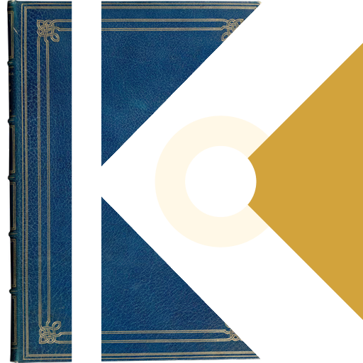
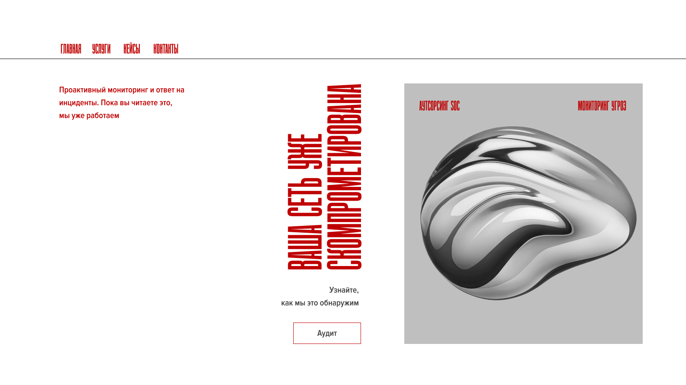
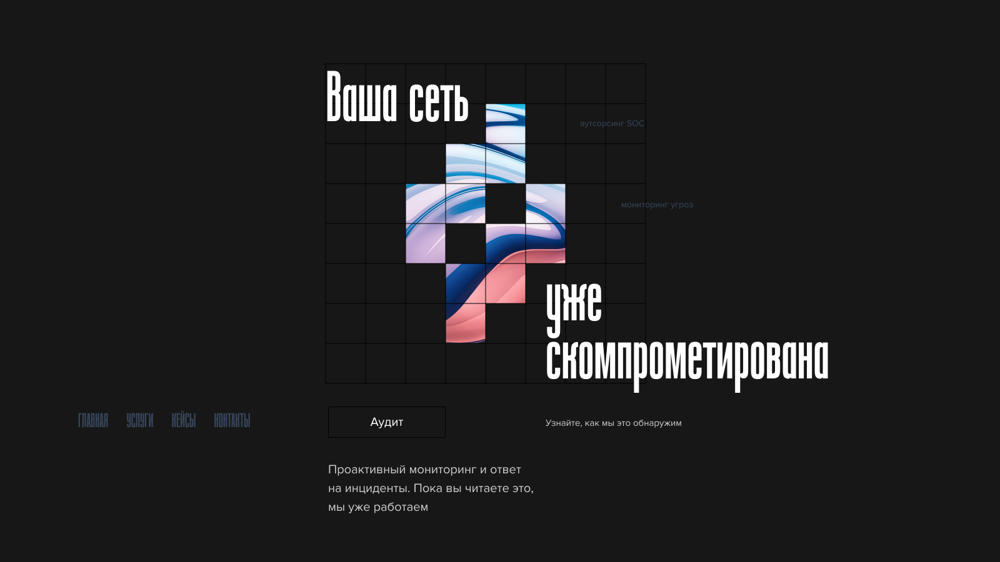
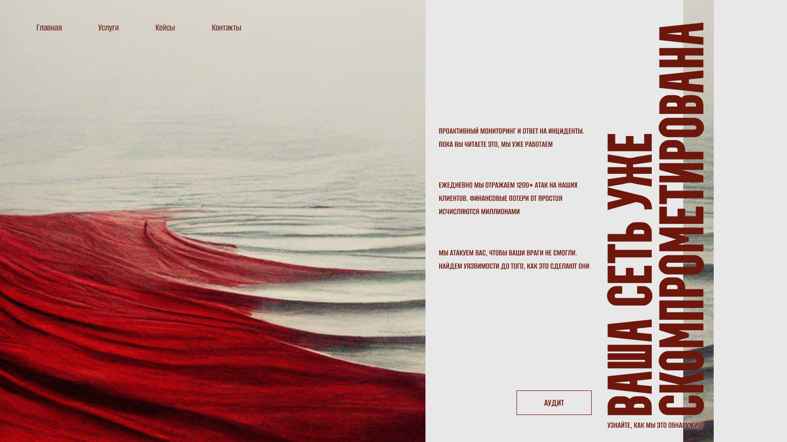

Проблема не в отсутствии идей. Проблема в страхе. Страхе сказать что-то не то. Страхе выделиться. В итоге компании предпочитают не говорить ничего – и дизайн становится немым
Я помогаю любым проектам найти свой голос. Не крикливый, а уверенный. Не агрессивный, а защищающий. Не сложный, а технологичный
Как это работает? Я не спрашиваю: «Какой дизайн вам нравится». Я спрашиваю: «Как ваша аудитория должна чувствовать себя при взаимодействии с вашим продуктом? В безопасности? Под защитой? В руках экспертов?»

Затем перевожу эти чувства в визуальный язык. Чёткие структуры, которые показывают системность. Широкие насыщенные элементы, которые демонстрируют активную защиту. Цвета, которые вызывают правильные ассоциации

Я нацеливаюсь на дизайн, который говорит. Который отличает. Который убеждает. Который превращает посетителя в клиента. Потому что клиент чувствует: здесь свои; здесь знают что делают
